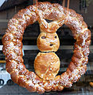
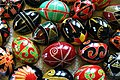
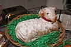

Wielkanoc, Niedziela Wielkanocna, Wielka Niedziela, Zmartwychwstanie Pańskie – najstarsze i najważniejsze święto chrześcijańskie celebrujące misterium paschalne Jezusa Chrystusa: jego mękę, śmierć i zmartwychwstanie, obchodzone przez Kościoły chrześcijańskie zachowujące Nicejskie wyznanie wiary.
Rozwinęło się od święta obchodzonego w duchu i prawdzie w ramach żydowskich obrzędów Pesach. Następnie, po oddzieleniu Kościoła od Synagogi, stało się prostym dorocznym świętem poprzedzonym jednym lub kilkoma dniami postu, sprawowanym jako całonocne czuwanie (Wigilia Paschalna), w czasie którego opowiadano historię zbawienia zwieńczoną w wydarzeniach paschalnych z udziałem Jezusa Chrystusa i składano eucharystyczną ofiarę prawdziwego Baranka (Orędzie paschalne) – Syna Bożego.
A ostatecznie przybrało formę trzydniowego obchodu tzw. Triduum Paschalnego, poprzedzonego czterdziestodniowym okresem przygotowania (wielki post) i kontynuowanego radosną celebracją pięćdziesięciu dni okresu wielkanocnego aż do święta Zesłania Ducha Świętego.
Obchody Wielkanocne w kościele rzymskokatolickim
Obraz "Zmartwychwstanie Chrystusa"
Poprzedzający Wielkanoc tydzień, stanowiący okres wspominania najważniejszych dla wiary chrześcijańskiej wydarzeń, nazywany jest Wielkim Tygodniem. Ostatnie trzy doby tego tygodnia: Wielki Czwartek (wieczór), Wielki Piątek, Wielka Sobota i Niedziela Zmartwychwstania znane są jako Triduum Paschalne (Triduum Paschale).
Niedziela wielkanocna rozpoczyna się już w sobotę po zapadnięciu zmroku. Rozpoczyna ją Wigilia Paschalna, podczas której zapala się paschał – wielką woskową świecę, która symbolizuje zmartwychwstałego Chrystusa. Jest to również ostatni dzień Triduum Paschalnego, liczonego według kalendarza żydowskiego od wieczoru Wielkiego Czwartku do wieczornych nieszporów w Niedzielę.
Świętowanie Wielkanocy rozciąga się na kolejne osiem dni – oktawę wielkanocną, a szerzej – na cały Okres wielkanocny, trwający 50 dni, a którego zakończeniem jest dzień pięćdziesiątnicy – Niedziela Zesłania Ducha Świętego.
W 40. dniu (czwartek) obchodzona jest uroczystość Wniebowstąpienia Pana Jezusa. W tym okresie używa się w liturgii białego koloru szat liturgicznych.
Tradycje Wielkanocne w Polsce
W polskim zwyczaju, po porannej rezurekcji rodzina zasiada do uroczystego śniadania wielkanocnego, które rozpoczyna się składaniem życzeń i dzieleniem się święconką z koszyczka. Na stołach znajdują się jajka, wędliny, wielkanocne baby i mazurki. Stoły zdobione są bukietami z bazi i pierwszych wiosennych kwiatów.
W niektórych regionach, np. na Śląsku, rodzice chowali w domu lub w ogrodzie koszyczki ze słodyczami, prezenty od wielkanocnego zajączka, na poszukiwanie których wyruszały dzieci. Zwyczaj ten obecnie rozpowszechnił się w formie obdarowywania się w tym dniu drobnymi upominkami, tzw. zajączkami.
Niedziela, podobnie jak i poniedziałek, są w Polsce dniami wolnymi od pracy. Tradycyjnie spędza się je w domu, w gronie rodzinnym.

Zajączek z pieczywa

Pisanki

Baranek z ciasta